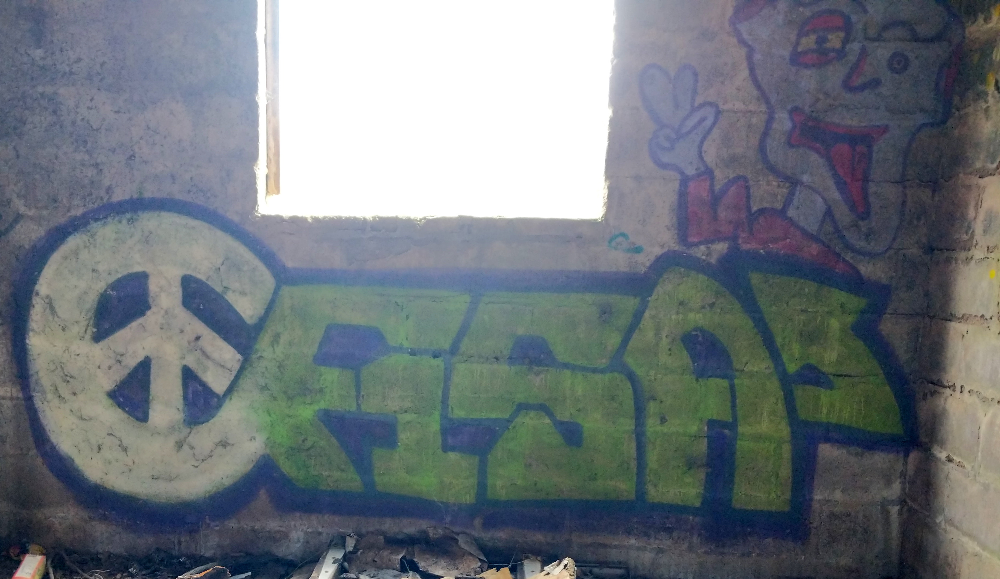

Street Art Aberdeen
Near 19 Fairview Grange, Danestone, Bridge of Don, Aberdeen AB22 8AZ, UK
Photo:

Location:
Year created:
Unknown
Medium:
Spray
State:
OK
Old farm, Bridge of Don
Other art nearby, the 20 closest...
Instagram image